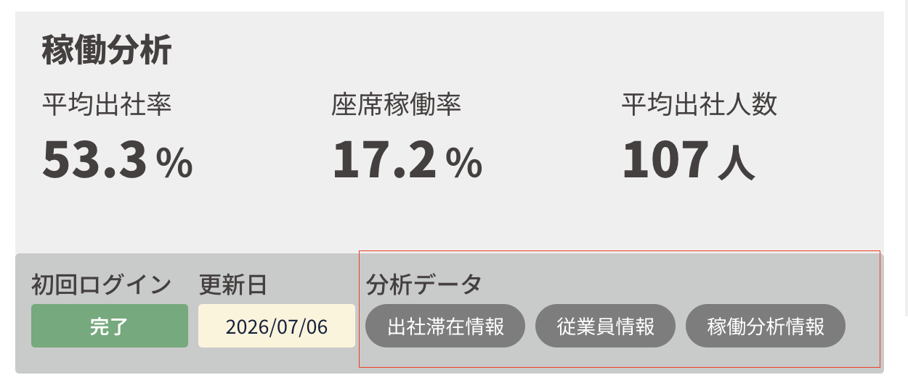
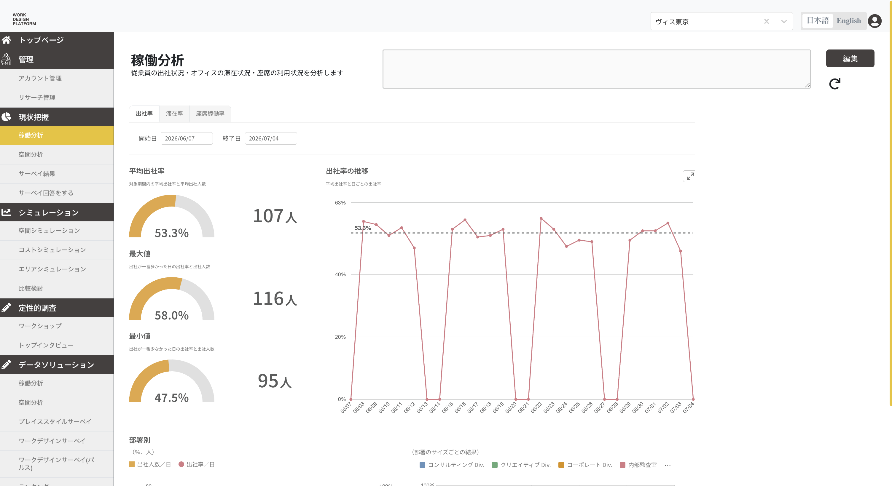
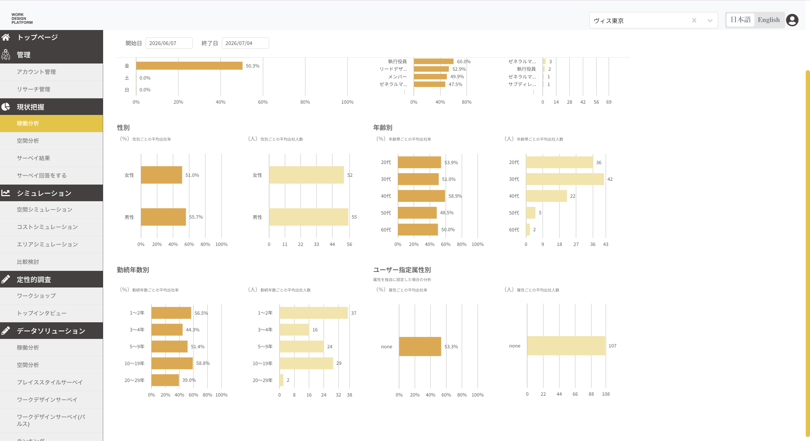
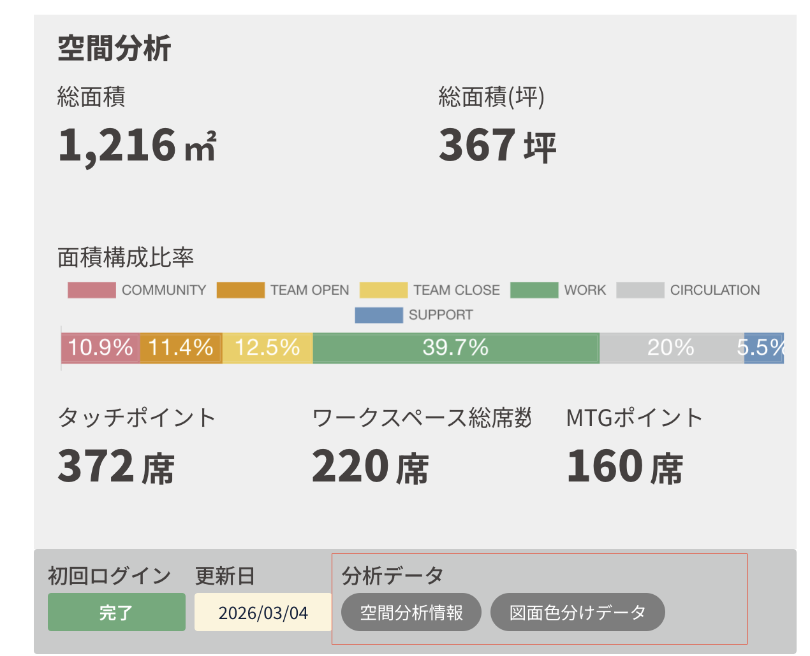
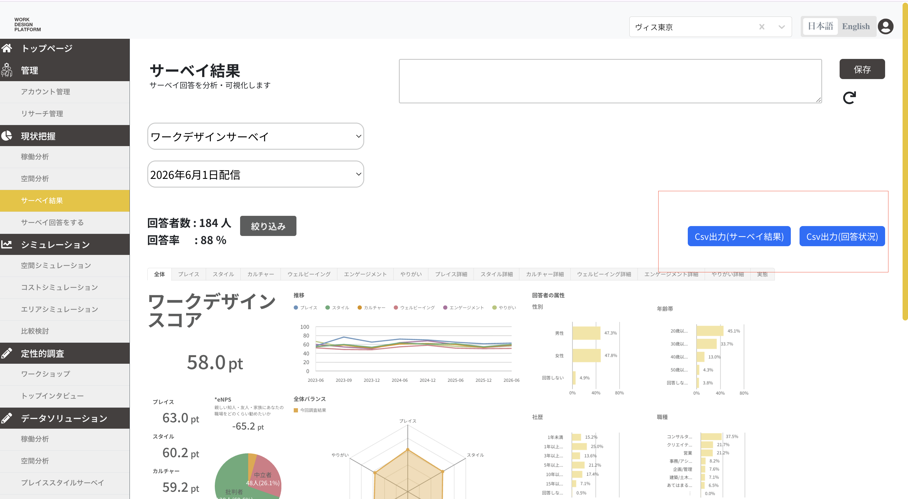

改善と機能追加の提案Đề xuất cải thiện và thêm chức năngWorkplace Data Platform
VIS × WDP
グラフを見る仕組みから、 判断を助ける仕組みへ。Từ công cụ xem biểu đồ sang công cụ hỗ trợ quyết định.
この資料では、WDPのいまの困りごとを整理し、改善案を「困りごとごと」に分けて示します。入力の改善案には、いまの画面の再現と新しい画面例を並べて載せています。Tài liệu này sắp xếp các khó khăn hiện tại của WDP và trình bày hướng cải thiện theo từng vấn đề. Phần nhập liệu có cả hình mô tả màn hình hiện tại và ví dụ màn hình mới để dễ so sánh.
読む人: 管理者 / 営業 / 相談担当Đối tượng: quản trị viên / kinh doanh / tư vấn範囲: 稼働分析・空間分析・調査Phạm vi: phân tích hoạt động · không gian · khảo sát構成: 課題 → 改善案 → 画面例Cấu trúc: vấn đề → hướng cải thiện → ví dụ màn hình
01
目指す姿と目的Hướng đi và mục đích
WDPを「グラフを表示する道具」から「判断を助ける仕組み」へ変えます。Đưa WDP từ công cụ hiển thị biểu đồ thành hệ thống hỗ trợ ra quyết định.
お客様（管理者）向けVới khách hàng (quản trị viên)
手作業を減らし、手順を分かりやすくするGiảm thao tác tay, làm rõ từng bước
設定の流れを一つにまとめ、迷いにくくするGom luồng thiết lập thành một chuỗi bước rõ ràng
失敗したとき、理由と直し方を画面で示すKhi lỗi, hiện rõ lý do và cách sửa trên màn hình
表計算ソフトでの事前整形をできるだけ減らすGiảm tối đa việc chỉnh sửa bảng tính trước khi đưa lên
Visの事業向けVới hoạt động kinh doanh của Vis
他社との差を作り、導入と相談の負担を下げるTạo điểm khác biệt, giảm gánh nặng triển khai và tư vấn
説明しやすい強みを増やし、導入の決め手にするThêm điểm mạnh dễ giải thích để hỗ trợ quyết định mua
最初の設定の手間を下げ、有料利用への移行を後押しするGiảm công thiết lập ban đầu, hỗ trợ chuyển sang bản trả phí
相談担当の報告書づくりを楽にし、人数を増やしやすくするGiảm việc làm báo cáo thủ công cho tư vấn, dễ mở rộng đội ngũ
02
いまの困りごと（3つの視点）Khó khăn hiện tại (3 góc nhìn)
製品・事業・社内運用の3つに分けて整理します。あとの改善案は、この困りごとに対応する形で並べます。Chia thành sản phẩm, kinh doanh và vận hành nội bộ. Các đề xuất sau sẽ gắn trực tiếp với từng khó khăn này.
A. 製品・技術A. Sản phẩm và kỹ thuật
手作業が多いNhiều thao tác tay従業員情報や出社・滞在の表を、上げる前に何度も直す必要がある。Phải chỉnh sửa nhiều lần bảng thông tin nhân viên và lịch sử đến/ở lại trước khi đưa lên hệ thống.
グラフを見せるだけで終わるChỉ dừng ở việc hiện biểu đồ傾向や回答結果は見えるが、意味の読み取りは人が行う。Có thể xem xu hướng và kết quả trả lời, nhưng việc đọc hiểu vẫn do người làm.
直書きの設定が多く、広げにくいNhiều chỗ viết cứng, khó mở rộngプログラム内の固定値が多く、データのずれや新しい分析機能の追加を難しくしている。Nhiều giá trị cố định trong chương trình, dễ lệch dữ liệu và khó thêm chức năng phân tích mới.
B. 事業・市場B. Kinh doanh và thị trường
他社より遅れている印象Dễ bị cảm nhận là đi sau đối thủ人事向けの他社が先に高度な分析を出しており、差が伝わりにくい。Đối thủ trong lĩnh vực nhân sự đã có phân tích sâu hơn, điểm khác biệt của Vis chưa rõ.
説明しやすい強みが弱いThiếu điểm mạnh dễ thuyết phục商談で「これがあるから選ぶ」と言える機能が少ない。Ít chức năng đủ mạnh để nói “chọn vì có cái này” trong buổi giới thiệu.
最初の設定が重く、有料利用が進みにくいThiết lập ban đầu nặng, khó chuyển sang bản trả phí需要はあるが、始め方が複雑で購入の判断が止まりやすい。Nhu cầu có, nhưng cách bắt đầu phức tạp khiến quyết định mua bị dừng lại.
C. 社内の運用C. Vận hành nội bộ
相談担当の負担が大きいGánh nặng lớn cho đội tư vấnグラフを見て報告書を手作業で作るため、人数を増やしにくい。Phải nhìn biểu đồ rồi tự viết báo cáo, nên khó mở rộng quy mô dịch vụ.
社内だけで高度な機能を育てにくいKhó tự phát triển chức năng cao trong nội bộ通常の採用だけでは、高度な分析機能を自前で進めにくい。Chỉ tuyển kỹ sư thông thường thì khó tự làm các chức năng phân tích cao cấp.
03
改善案（困りごとごとに整理）Đề xuất cải thiện (theo từng vấn đề)
優先度では分けません。どの困りごとをどう良くするかを軸に並べます。Không xếp theo mức ưu tiên. Trình bày theo từng vấn đề cần cải thiện.
困りごと 1Vấn đề 1
データの入れ方が分かりにくく、手作業が多いCách đưa dữ liệu vào khó hiểu và nhiều thao tác tay
対象: トップ / 稼働分析 / 空間分析Phạm vi: trang đầu · phân tích hoạt động · phân tích không gian
いまHiện tại
出社・滞在と従業員の表を、上げる前に手で整えるPhải chỉnh tay bảng đến/ở lại và bảng nhân viên trước khi đưa lên
形式が違うと止まるが、理由が表示されないSai định dạng thì dừng, nhưng không hiện lý do
画面が分かれ、同じような設定を繰り返すMàn hình tách rời, phải lặp lại các bước thiết lập tương tự
改善後Sau cải thiện
案内つきの一つの流れにまとめるGom thành một luồng có hướng dẫn từng bước
失敗時に、どこが違うかと直し方を示すKhi lỗi, chỉ rõ chỗ sai và cách sửa
列の対応を画面が提案し、人は確認するMàn hình đề xuất cột tương ứng, người chỉ cần xác nhận
1
一つの案内画面にまとめるGom vào một màn hình hướng dẫn稼働分析・空間分析とも、種類の選択から保存までを同じ流れにする。Cả phân tích hoạt động và không gian đều đi từ chọn loại đến lưu trong cùng một luồng.
2
失敗理由をその場で見せるHiện lý do lỗi ngay tại chỗ「失敗しました」だけで終わらせず、直し方まで案内する。Không dừng ở “thất bại”, mà hướng dẫn luôn cách sửa.
3
列の対応を提案するĐề xuất cách gắn cột手入力の列名指定をやめ、候補から選ぶ形にする。Bỏ việc gõ tên cột bằng tay, chuyển sang chọn từ danh sách gợi ý.
いまの実画面（稼働分析）Màn hình thật hiện tại (phân tích hoạt động)
トップの分析データが分かれており、設定や確認の入口が複数あります。Trên trang đầu, dữ liệu phân tích bị tách thành nhiều nút — nhiều lối vào để thiết lập/kiểm tra.
現状 · トップHiện tại · Trang đầu

トップページ · 稼働分析部分Trang đầu · phần phân tích hoạt động「出社滞在情報」「従業員情報」「稼働分析情報」が別ボタン。設定の入口が分かれ、手順が長くなりやすい。Các nút “thông tin đến/ở lại”, “thông tin nhân viên”, “thông tin phân tích hoạt động” tách riêng — lối vào thiết lập bị chia nhỏ, dễ kéo dài thao tác.現状 · 分析画面Hiện tại · Màn phân tích

稼働分析画面（グラフ表示）Màn phân tích hoạt động (hiển thị biểu đồ)数値と推移は見えるが、データの入れ方や直し方はこの画面からは分かりにくい。Có số liệu và xu hướng, nhưng cách đưa dữ liệu vào / sửa lỗi khó nắm từ màn hình này.
現状 · 詳細グラフHiện tại · Biểu đồ chi tiết

稼働分析画面（属性別の内訳）Màn phân tích hoạt động (chi tiết theo thuộc tính)見たい情報は多い一方、準備作業（ファイル整形・列設定）は別画面のまま残っています。Thông tin xem được nhiều, nhưng phần chuẩn bị (chỉnh tệp · gắn cột) vẫn nằm ở màn hình khác.
上は現行サイトの実画面です。下の改善案（案内画面）と並べて比較できます。画像をクリックすると拡大表示します。Trên là màn hình thật của hệ thống hiện tại. Có thể so sánh với ví dụ cải thiện bên dưới. Bấm ảnh để phóng to.
改善案の画面例 — 稼働分析Ví dụ màn hình cải thiện — phân tích hoạt động
4つのデータ元を一つの案内にまとめ、列の対応をその場で提案します。Gộp 4 nguồn dữ liệu vào một hướng dẫn, đề xuất gắn cột ngay trên màn hình.
データ元を選ぶChọn nguồn dữ liệu無線 / 入退室 / 手入力 / 自動収集Không dây · ra vào · nhập tay · thu thập tự động
2
ファイルを上げるĐưa tệp lênその場で形式を確認Kiểm tra định dạng ngay
3
列の対応を確認Xác nhận gắn cột提案を見て直せるXem gợi ý và chỉnh lại được
4
条件を確認して保存Xác nhận điều kiện rồi lưu1回の保存で完了Lưu một lần là xong
いまの実画面（空間分析）Màn hình thật hiện tại (phân tích không gian)
空間分析情報と図面色分けデータが別入口です。アップロードも分かれています。Thông tin phân tích không gian và dữ liệu tô màu bản vẽ là hai lối vào riêng. Việc đưa tệp lên cũng tách rời.
現状 · トップHiện tại · Trang đầu

トップページ · 空間分析部分Trang đầu · phần phân tích không gian「空間分析情報」「図面色分けデータ」が別ボタン。データと図面を別々に扱うため、手順が分断されます。Hai nút “thông tin phân tích không gian” và “dữ liệu tô màu bản vẽ” tách riêng — dữ liệu và bản vẽ xử lý riêng nên luồng bị đứt đoạn.
下の改善案では、データ確認と図面アップロードを一つの案内にまとめます。Ví dụ cải thiện bên dưới gom kiểm tra dữ liệu và đưa bản vẽ lên vào cùng một hướng dẫn.
改善案の画面例 — 空間分析Ví dụ màn hình cải thiện — phân tích không gian
データと図面を一つの案内にまとめ、バージョン／フロアを自動で用意します。Gộp dữ liệu và bản vẽ vào một hướng dẫn; tự chuẩn bị phiên bản / tầng.
空間分析でも、稼働分析と同じ考え方（一つの流れ・失敗理由の表示・確認しながら進む）を使います。Phân tích không gian cũng dùng cùng cách làm với phân tích hoạt động: một luồng, hiện lý do lỗi, đi từng bước có xác nhận.
困りごと 2Vấn đề 2
調査の進み具合が分かりにくく、催促が手作業Khó theo dõi tiến độ khảo sát, việc nhắc nhở làm bằng tay
対象: 調査の設定と進捗確認Phạm vi: thiết lập và theo dõi khảo sát
いまHiện tại
誰が未回答かを知るために表を書き出すPhải xuất bảng ra ngoài để biết ai chưa trả lời
表計算ソフトで目視確認するMở bảng tính và kiểm tra bằng mắt
催促はシステム外で個別に行うNhắc nhở phải làm riêng bên ngoài hệ thống
改善後Sau cải thiện
画面上で回答済み / 未回答をすぐ見るXem ngay trên màn hình ai đã trả lời / chưa trả lời
未回答者へまとめて案内できるGửi hướng dẫn hàng loạt cho người chưa trả lời
定期案内を設定できるCó thể đặt lịch gửi hướng dẫn định kỳ
A
進捗の一覧画面Màn hình theo dõi tiến độ回答率や部署別の進み具合を、書き出しなしで確認する。Xem tỷ lệ trả lời và tiến độ theo bộ phận mà không cần xuất tệp.
B
案内の自動化Gửi hướng dẫn tự động未回答者への一括案内、または決まった日時の自動送信。Gửi hàng loạt cho người chưa trả lời, hoặc gửi tự động theo lịch cố định.
いまの実画面（サーベイ結果）Màn hình thật hiện tại (kết quả khảo sát)
回答状況の確認はCSV出力に寄っています。Việc kiểm tra tình trạng trả lời đang phụ thuộc vào xuất CSV.
現状 · サーベイ結果Hiện tại · Kết quả khảo sát

サーベイ結果画面Màn hình kết quả khảo sát「Csv出力(サーベイ結果)」「Csv出力(回答状況)」があり、未回答者の確認や催促は画面の外で行いがちです。Có nút xuất CSV kết quả / tình trạng trả lời — việc tìm người chưa trả lời và nhắc nhở thường phải làm ngoài màn hình.
下の改善案では、進捗確認と案内を同じ画面で完結させます。Ví dụ cải thiện bên dưới giúp kiểm tra tiến độ và gửi hướng dẫn ngay trên cùng một màn hình.
改善案の画面例 — 調査の進捗管理Ví dụ màn hình cải thiện — theo dõi khảo sát
回答率、未回答者、一括案内、定期案内を一つの画面にまとめた例です。Ví dụ gom tỷ lệ trả lời, danh sách chưa trả lời, gửi hàng loạt và lịch định kỳ vào một màn hình.